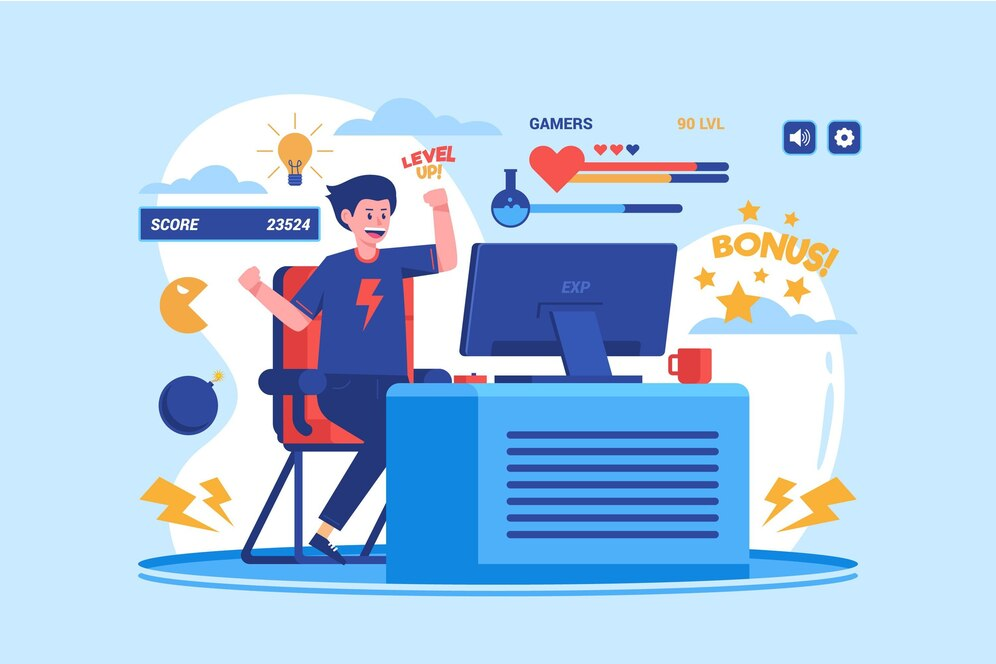

Game Developer
Introduction :
For those captivated by the magic of interactive entertainment and inspired to create worlds where imagination knows no bounds, game development offers an exhilarating path of fulfillment and creativity. Aspiring game developers step into a realm where dreams are transformed into digital realities, and every line of code becomes a brushstroke on the canvas of imagination. Imagine having the power to craft immersive experiences that transport players to fantastical realms, where they can embark on epic quests, solve challenging puzzles, and forge unforgettable adventures. As a game developer, you have the opportunity to shape narratives, design characters, and engineer gameplay mechanics that evoke emotion and captivate audiences around the globe. Whether you're drawn to the thrill of coding, the artistry of visual design, or the intricacies of narrative storytelling, game development offers a diverse and dynamic playground for your talents to flourish. Collaborate with like-minded creators, experiment with cutting-edge technologies, and embark on a journey of discovery where every challenge is an opportunity for growth and innovation. From indie studios pushing the boundaries of creativity to industry giants producing blockbuster titles, the game development community is a vibrant and welcoming ecosystem where ideas are nurtured, and dreams are realized. So, if you're passionate about creating unforgettable experiences and ready to unleash your creativity on the world stage, game development awaits. Embrace the adventure, and let your imagination soar as you embark on the thrilling journey of becoming a game developer.
Pre-requisite Knowledge :

- Proficiency in Programming: Mastery of programming languages such as C++, C#, or Java is essential for game development. Understanding concepts like data structures, algorithms, and object-oriented programming is crucial for coding game mechanics and systems.
- Knowledge of Game Engines: Familiarity with game engines such as Unity or Unreal Engine is necessary for building games efficiently. Understanding how to use these tools to create and manipulate game assets, implement gameplay mechanics, and optimize performance is essential for game development.
- Understanding of Game Design Principles: A solid understanding of game design principles, including gameplay mechanics, player psychology, and level design, is crucial for creating engaging and immersive gaming experiences.
- Artistic Skills: Basic artistic skills, including 2D and 3D art, animation, and graphic design, can be beneficial for creating game assets and visual elements. While not mandatory, having a good eye for aesthetics can enhance the quality of your game.
- Problem-Solving Abilities: Game development often involves solving complex problems and overcoming technical challenges. Strong problem-solving skills, creativity, and perseverance are essential for tackling obstacles and finding innovative solutions.
- Collaboration and Communication Skills: Game development is often a collaborative effort involving teams of developers, artists, designers, and other professionals. Effective communication and collaboration skills are essential for working harmoniously within a team and bringing creative visions to life.
- Passion for Games: A genuine passion for gaming and a desire to create immersive and enjoyable experiences for players are fundamental prerequisites for becoming a successful game developer. A deep understanding of various game genres, mechanics, and trends can also be advantageous for creating compelling games.
{kind=link}
Scope in Masters :

A Master's degree in Game Development equips students with specialized knowledge and practical skills necessary to thrive in this competitive field. Graduates gain expertise in areas such as game design, programming, graphics development, and interactive storytelling, preparing them for diverse roles within the gaming industry. Beyond traditional job profiles, game developers have opportunities for impactful contributions in areas like virtual reality, augmented reality, esports, and gamification across various sectors. In an era where gaming has become a mainstream form of entertainment and interactive media, game developers play a crucial role in shaping the future of entertainment and technology. A Master's degree in Game Development opens doors to lucrative career prospects, offering competitive salaries and the chance to work on cutting-edge projects with leading game development studios and tech companies worldwide. Additionally, game developers have the opportunity to unleash their creativity, collaborate with talented teams, and leave a lasting impact on the gaming landscape through innovative game experiences. Overall, a Master's degree in Game Development provides a pathway to a dynamic and rewarding career in an industry that continues to push the boundaries of creativity and innovation.
Best Countries and Colleges :
| Country | Colleges |
|---|---|
| United States | University of Southern California (USC), DigiPen Institute of Technology, New York University (NYU), Rochester Institute of Technology (RIT), University of Utah |
| United Kingdom | University of Abertay Dundee, University of Central Lancashire, University of Portsmouth, Birmingham City University, University of Hertfordshire |
| Canada | University of Waterloo, University of British Columbia (UBC), Sheridan College, Vancouver Film School, Carleton University |
| Netherlands | Delft University of Technology, Utrecht University, NHTV Breda University of Applied Sciences, Hanze University of Applied Sciences, University of Amsterdam |
| Sweden | Stockholm University, Chalmers University of Technology,Blekinge Institute of Technology, Uppsala University |
Current Demand Scenario :
As advancements in technology continue to push the boundaries of what's possible in gaming, the demand for innovative and talented game developers is at an all-time high. The rise of esports as a global phenomenon has further fueled the demand for skilled professionals who can create competitive and immersive gaming experiences. With the increasing accessibility of game development tools and platforms, individuals from diverse backgrounds are entering the industry, contributing to its growth and evolution. Game development offers not only lucrative career opportunities but also the chance to be part of a creative and collaborative community that thrives on pushing the boundaries of entertainment. Overall, the game development industry presents an exciting and dynamic landscape for individuals looking to turn their passion for gaming into a fulfilling and impactful career.
Job Roles :
In the field of game development, a wide range of job roles exists, each contributing to the creation and production of video games. Some common job roles in the industry include: